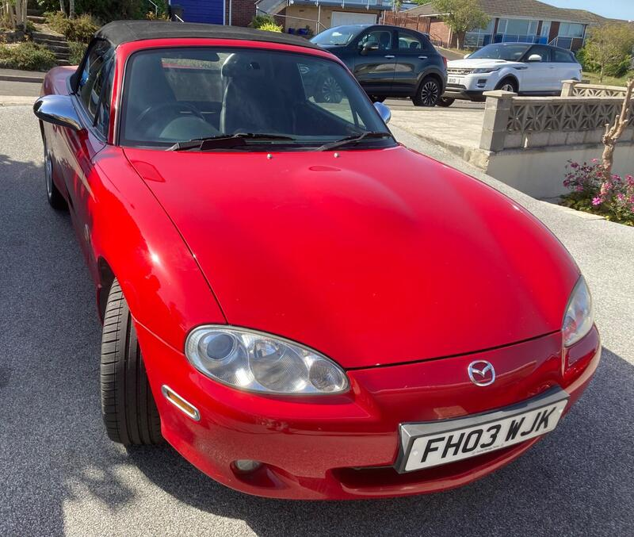
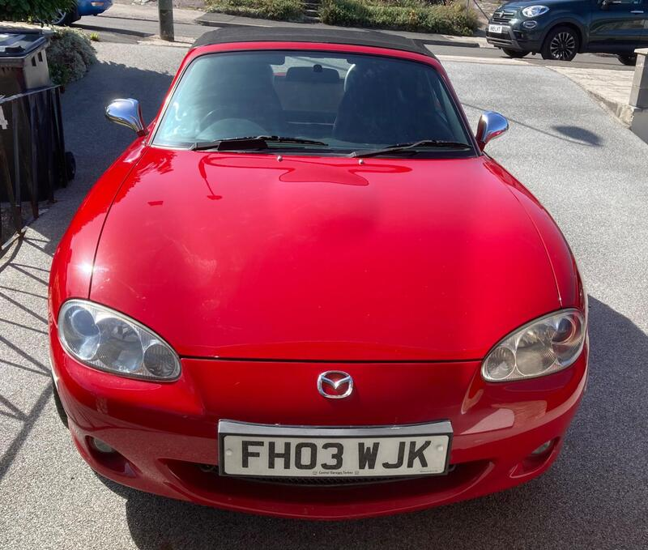
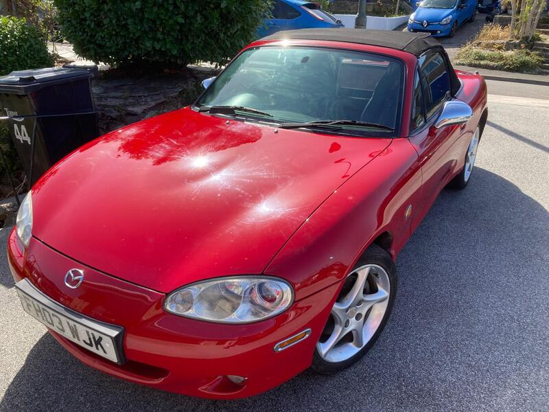
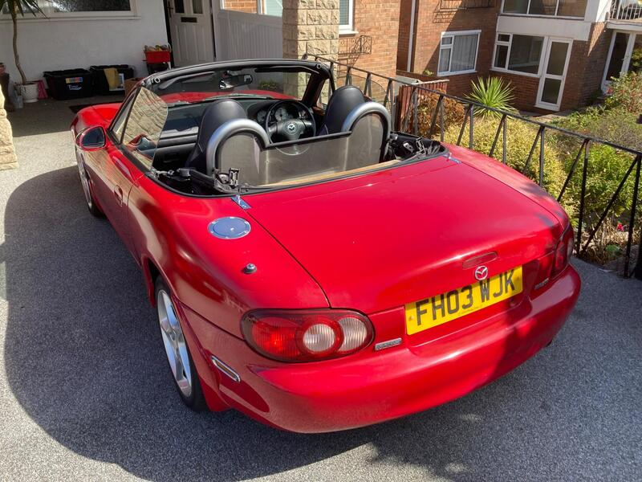

Seller photos from the AutoTrader ad.
2003 MX-5 1.8 Sport
A high-miler that's been cared for. The price reflects the miles.
Key facts
| Price | £2,500 |
|---|---|
| Year | 2003 |
| Miles | 124,985 |
| Variant | 1.8 Sport |
| Edition | Sport |
| Engine | 1.8 |
| Colour | Red |
| Registration | 2003 (03 reg) |
| Owners | 4 owners |
| Seller | Private seller |
| Location | Torquay |
| From Poole | ~100 mi (estimate) |
| Source | AutoTrader, checked 12 Oct 2026 |
Why buy it
- Same owner for 20 years, MOT to Sep 2027 (ad)
- Heated leather seats
Things to check
- 125k miles
125k miles
- Mk2.5 weak spots
Sills, rear arches and chassis rails for rust, the hood seams, and when the cambelt was last changed.
Seller says (extract)
“I've owned this MX5 for 20 years and it's been serviced regularly and looked after. LONG MOT UNTIL SEPTEMBER 2027. Tyres in excellent condition, alloys in good condition. Heated leather seats and interior all clean and in good condition. 6 CD player. CDs stored in the player itself. Wood effect trim with Nardi Torino gear knob and steering wheel. The exterior is in generally good condition, but has the usual rust for an MX5 of this age occurring on the rear wheel arches. The driver' Chrome effect wing mirrors, petrol cap, windscreen wash squirters and mesh type grill on front. The hood is in very good condition due to having a hardtop being used during the winter months. The driver's side rear wheel arches has sun fading on the red paintwork. New battery fitted September 2026.…”